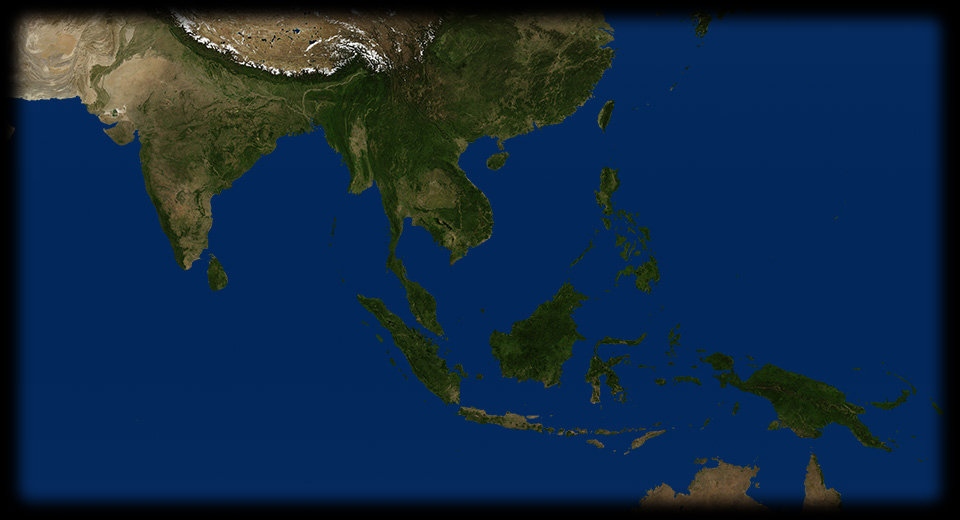
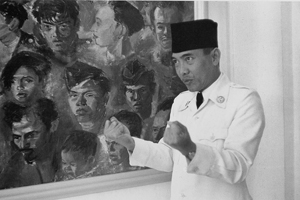
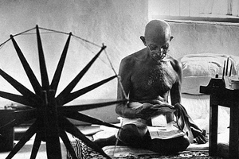
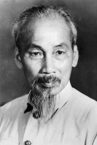
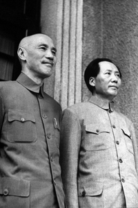

- 330 410
- 125 190
- 145 440
- 65 510
- 185 460
- 360 430
- 185 595
-

SUKARNO
Sukarno, qui ritratto in una fotografia del 1949 è il primo presidente dell'Indonesia, dopo aver guidato, con l'aiuto del Giappone, il paese all'indipendenza dalla sovranità coloniale dei Paesi Bassi. - 
INDIA
Questo scatto dl 1946 di Margaret Bourke White, che ritrae il Mahatma Gandhi intento a filare davanti ad un telaio, diviene presto emblematico per rappresentare la filosofia e la pratica della "non-violenza". - 
VIETNAM
Ho Chi Mihn in un ritratto fotografico che ne impose l'immagine nei media di tutto il mondo. - 
CINA
Il primo ottobre 1949, a Pechino, i comunisti guidati da Mao Tse Tung, che rimarrà al timone del paese fino alla morte (1976), proclamano la Repubblica Popolare Cinese, unificando un paese sconvolto dalla dominazione straniera e dalla guerra civile. Mao si ispira al marxismo leninismo, ma ben presto entra in conflitto con l'Unione Sovietica e sviluppa una politica autonoma, fonte di ispirazione per molti paesi del Terzo Mondo. VIETNAM
Ho Chi-Minh nel 1945 proclama la Repubblica Democratica del Vietnam con capitale Hanoi. La Francia non riconosce il nuovo Stato. Scoppia una guerra che provoca la divisione del paese nel Vietnam del Nord, riconosciuto da Cina e Urss, e Viet Nam del Sud, considerato uno "stato fantoccio" (1949). La Francia riconoscerà il Vietnam solo nel 1954.INDONESIA
La colonia olandese dell'Indonesia diventa indipendente dopo due anni (1947-1949) di scontri armati contro i coloni, che non vogliono concedere l'indipendenza. Nel 1949 si ha il riconoscimento da parte dell'Olanda e degli Stati Uniti dell'indipendenza indonesiana.FILIPPINE
Nel 1946 le Filippine ottengono l'indipendenza dagli Stati Uniti per via pacifica, in cambio di concessioni economiche: sfruttamento delle risorse, possibilità di stanziare nel paese basi aree e navali. Con la decolonizzazione le Filippine ottengono l'indipendenza politica ma non quella economica.